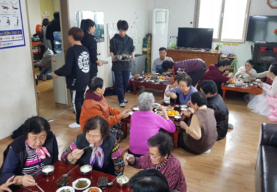
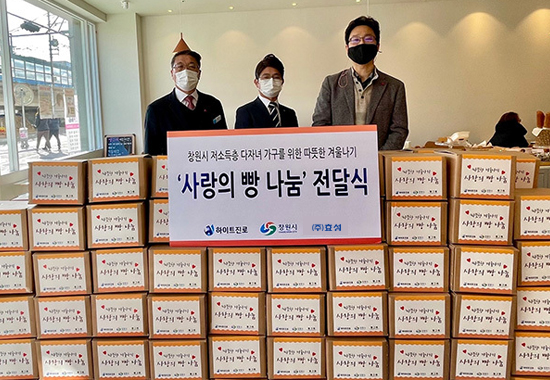
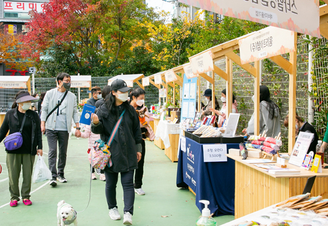
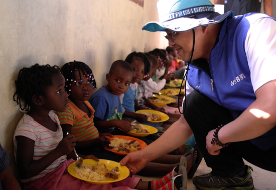
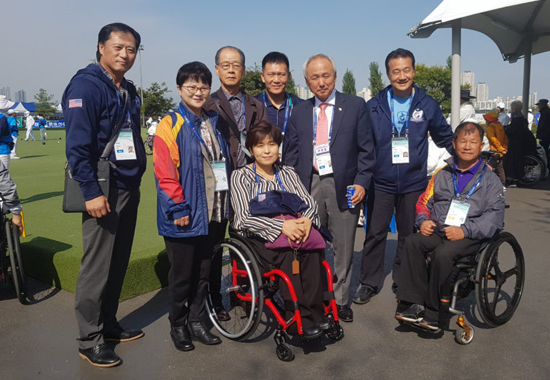
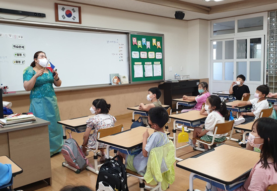
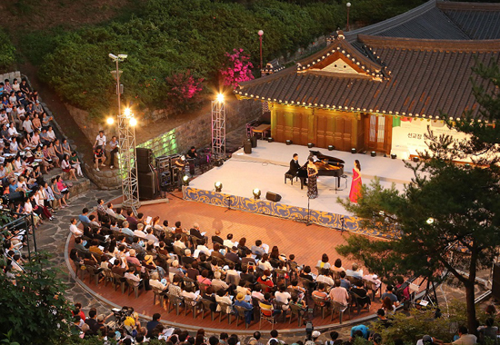
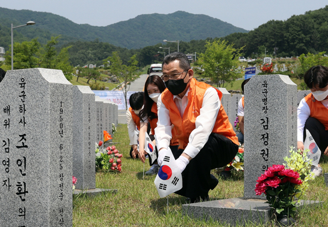

나눔경영
효성의 다양한 사회공헌 활동을 만나보세요.
우리는 일함으로 생계를 유지하지만
나눔으로 인생을 만들어 간다
-
지역나눔
효성의 사업장 별 지역 나눔활동은 인근 취약계층 대상 사랑의 쌀/김장김치 활동부터 마을재생활동, 마포구 저소득층 희망나눔 페스티벌 후원, SNS와 연계한 인근 지역 생필품 지원 등으로 이어지고 있습니다.
-
저소득층 지원
기업의 사회공헌 활동은 다 함께 행복한 사회를 만드는 데 보탬이 되겠다는 가치의 실천이므로 무엇보다 진정성이 담겨 있어야 합니다. 효성은 임직원의 자발적인 참여를 통해 효성나눔봉사단을 운영하고 있습니다.
-
사회적기업 지원
효성은 사회적기업, 협동조합에 대한 다양한 지원뿐 아니라, 기업, 공공기관등과 사회적 경제조직을 연계하여 사회적 경제 기반 조성, 모델 발굴, 성장지원에 일조할 수 있도록 최선을 다하고 있습니다.
-
글로벌나눔
더 행복한 세상을 만들기 위한 효성의 사회공헌은 국경을 뛰어 넘습니다. 또한, 2017년 부터 베트남에서 매년 1천여명 이상의 주민을 치료하는 해외 의료봉사단 파견, 해외 재난지역 긴급 구호 활동 등을 통해 글로벌 시민들의 신뢰를 받는기업이 되고자 사회공헌 활동을 강화하고 있습니다.
-
장애인 지원
효성은 장애인에게 서비스 또는 일자리를 제공하거나 장애인사회에 공헌함으로써 삶의 질을 높이는 등의 사회적 목적을 추구하며 취업 및 창업에 지원을 아끼지 않고 있습니다.
-
교육사업
효성그룹의 창업주이신 만우 조홍제 선대회장은 백년대계를 위한 교육 사업으로 배명학원과 동양학원 이사장을 맡아 인재 양성에 힘썼습니다. 경영진은 이러한 창업정신을 이어받아 학교법인 동양학원을 발전적으로 운영하고 있습니다.
-
문화예술 후원
문화예술 분야에 대한 후원 활동은 소외 계층이 예술을 누릴 기회를 제공하고 나아가 직접 예술 활동에도 참여할 수 있도록 돕는 것을 골자로 하고 있습니다. 이외에도 장애어린이 오케스트라 후원, 임직원 문화유산 보호활동, 우수 연극단체 후원 등에 참여하고 있습니다.
-
호국보훈
효성은 사회공헌 분야 중에서도 특히 국가를 위한 활동을 폭넓게 전개하고 있습니다. 또한, 육군1군단 광개토부대와 자매결연을 통해 매년 군부대 발전을 위한 위문금은 물론 '사랑의 독서 카페'에 책을 기증하고 있습니다.